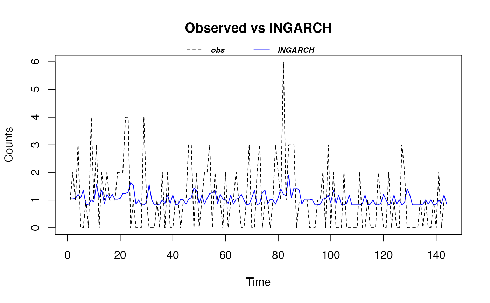
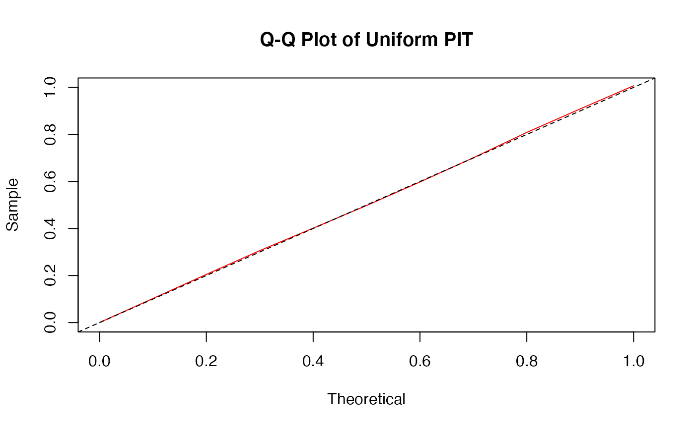
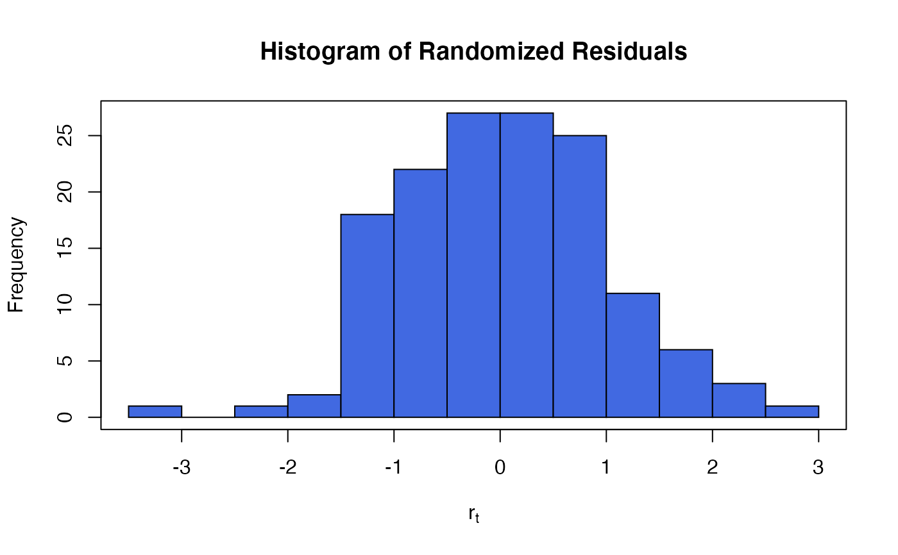

The function tsglm.izip is used to fit an iZIP integer-valued INGARCH model with identity link. The estimation is done by qausi-likelihood approach based on the Poisson likelihood function.
tsglm.izip( formula, past_mean_lags = 1, past_obs_lags = 1, data, ref.lambda = NULL, ... )
| formula | an object of class 'formula': a symbolic description of the response and exogenous regressors. |
|---|---|
| past_mean_lags | numeric vector: integer vector giving the previous conditional means to be regressed on. If omitted, or of length zero, there will be no regression on previous observations. |
| past_obs_lags | numeric vector: integer vector giving the previous observations to be regressed on (autoregression). If omitted, or of length zero, there will be no regression on previous conditional means. |
| data | an optional data frame containing the variables in the model |
| ref.lambda | the rate of a Poisson distribution that baseline zero-inflated odds based on. |
| ... | additional arguments to be passed to the lower level fitting function tsglm. See ?tscount::tsglm for more details. |
A fitted model object of class tsizip similar to one obtained from tsglm.
The function summary (i.e., summary.tsizip) can be used to obtain
and print a summary of the results.
The functions plot (i.e., plot.tsizip) and
autoplot can be used to produce a range
of diagnostic plots.
The generic assessor functions coef (i.e., coef.tsizip),
logLik (i.e., logLik.tsizip)
fitted (i.e., fitted.tsizip),
nobs (i.e., nobs.tsizip),
AIC (i.e., AIC.tsizip) and
residuals (i.e., residuals.tsizip)
can be used to extract various useful features of the value
returned by tsglm.izip.
An object class 'tsizip' is a list containing at least the following components:
a named vector of coefficients
robust standard errors (using the sandwich estimators)
the response residuals (i.e., observed-fitted)
the fitted mean values
the y vector used.
the model matrix for mean
the model frame for regression
the matched call
the formula supplied for regression
the terms object used for regression
the data argument
Fit an integered-valued GARCH time series iZIP Model.
The model is
$$Y_i ~ ZIP_{\nu}(\mu_i | \lambda = \lambda_{ref}),$$
where
$$E(Y_i) = \mu_i = x_i^T \beta + \alpha_1\mu_{t-1} + \ldots + \alpha_s\mu_{t-s} + \beta_1Y_{t-1} + \ldots + \beta_q Y_{t-q},$$
\(x_i\) are some covariates.
\(\nu \ge 0\) is the baseline zero-inflated odds relative to a Poisson with rate \(\lambda_{ref}\).
Huang, A. and Fung, T. (2020). Zero-inflated Poisson exponential families, with applications to time-series modelling of counts.
data(arson) M_arson <- tsglm.izip(arson ~ 1, past_mean_lags = 1, past_obs_lags = c(1, 2)) summary(M_arson)#> #> Call: tsglm.izip(formula = arson ~ 1, past_mean_lags = 1, past_obs_lags = c(1, #> 2)) #> #> Model Coefficients: #> Estimate Std.Err Z value Pr(>|z|) #> (Intercept) 8.315e-01 4.801e-01 1.732 0.0833 . #> beta_1 2.636e-02 8.355e-02 0.315 0.7524 #> beta_2 1.756e-01 8.886e-02 1.976 0.0481 * #> alpha_1 1.944e-09 4.662e-01 0.000 1.0000 #> --- #> Signif. codes: 0 ‘***’ 0.001 ‘**’ 0.01 ‘*’ 0.05 ‘.’ 0.1 ‘ ’ 1 #> #> (Standard errors obtained by normal approximation.) #> (Baseline zero-inflation odds for iZIP estimated to be 0.33) #> (The baseline Poisson rate for iZIP is set at 1.042) #> #> AIC: 404.5515 #> BIC: 419.4006